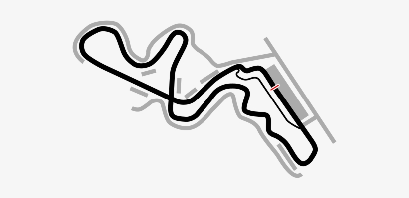
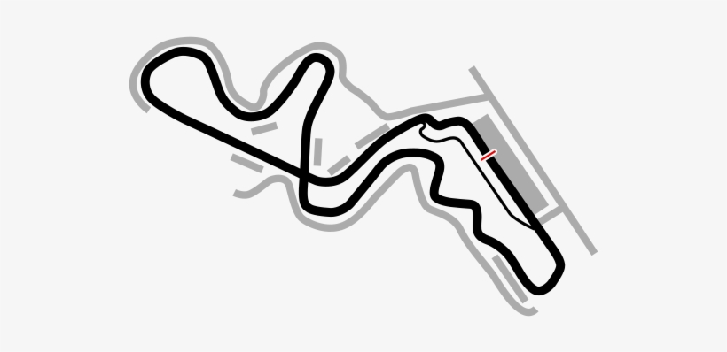

EXPLORE THE WORLD OF SKYLINE
The GT-R abbreviation stands for Gran Tourismo-Racing while the GT-B stands for Gran Tourismo-Berlinetta. The Japanese chose to use Italian naming conventions when naming the car - as most cars that were made in Japan at that time used Western abbreviations - to further enhance sales

THE CAR IN YOUR DREAMS
The Skyline GT-R became the flagship of Nissan performance, showcasing many advanced technologies
 

The GT-R's history of racetrack dominance began with its 50 victories scored from 1968 to 1972, including 49 consecutive wins in the Japanese race circuit. Nissan pulled out of racing shortly after the introduction of the KPGC110 due to the 1973 oil crisis.